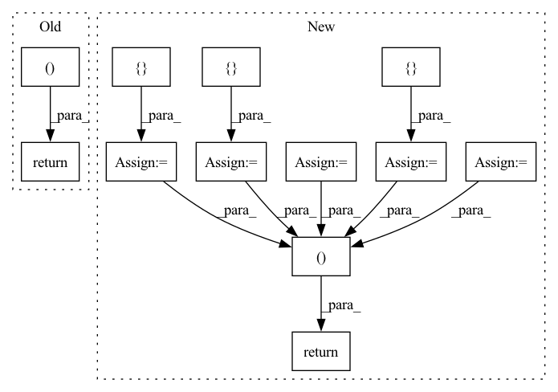

Pattern ID :1180
Before Change
self.type_vocab_size)
config = self.get_config()
return config, input_ids, token_type_ids, input_mask
def get_config(self):
return {
"vocab_size": self.vocab_size,After Change
token_type_ids = ids_tensor([self.batch_size, self.seq_length],
self.type_vocab_size)
sequence_labels = None
token_labels = None
choice_labels = None
if self.use_labels:
sequence_labels = ids_tensor([ self.batch_size = ids_tensor([ self.batch_size, self.seq_length = ids_tensor([ self.batch_sizereturn config, input_ids, token_type_ids, input_mask, sequence_labels, token_labels, choice_labels
def get_config(self):
return {
"vocab_size": self.vocab_size,In pattern: SUPERPATTERN
Frequency: 4
Non-data size: 12
Instances Fragment ID: 5955928
Project Name: paddlepaddle/paddlenlp
Commit Name: 8980d64f5ff5e466401c8f4690823f75a2ba96f9
Time: 2022-08-12
Author: guosheng@baidu.com
File Name: tests/transformers/bert/test_modeling.py
M Class Name: BertModelTester
N Class Name: BertModelTester
M Method Name: prepare_config_and_inputs(1)
N Method Name: prepare_config_and_inputs(1)
M Parent Class:
N Parent Class:
M File Name: tests/transformers/bert/test_modeling.py
N File Name: tests/transformers/bert/test_modeling.py
M Start Line: 82
M End Line: 96
N Start Line: 84
N End Line: 108
Before Change
// computing loss
trans_loss = trans_l2_loss(pred_trans, new_trans, valids)
loss_dict = { "trans_loss": trans_loss} // all loss are of shape [B]
if self.rot_loss == "l2":
loss_dict["rot_loss"] = rot_l2_loss(pred_quat, new_quat, valids)
elif self.rot_loss == "cosine":
loss_dict["rot_loss"] = rot_cosine_loss(pred_quat, new_quat,
valids)
if self.use_rot_pt_l2_loss:
loss_dict["rot_pt_l2_loss"] = rot_points_l2_loss(
part_pcs, pred_quat, new_quat, valids)
if self.use_rot_pt_cd_loss:
loss_dict["rot_pt_cd_loss"] = rot_points_cd_loss(
part_pcs, pred_quat, new_quat, valids)
if self.use_transform_pt_cd_loss:
loss_dict["transform_pt_cd_loss"] = shape_cd_loss(
part_pcs, pred_trans, new_trans, pred_quat, new_quat, valids)
// in eval, we also want to compute part_acc and connectivity_acc
if not self.training:
loss_dict["part_acc"] = calc_part_acc(part_pcs, pred_trans,
new_trans, pred_quat,
new_quat, valids)
if "contact_points" in data_dict.keys():
loss_dict["connectivity_acc"] = calc_connectivity_acc(
pred_trans, pred_quat, data_dict["contact_points"])
return loss_dict, out_dict["pre_pose_feats"]
def loss_function(self, data_dict):
Wrapper for computing MoN loss.
After Change
new_quat,
valids,
ret_pts=True)
loss_dict = {
"trans_loss": trans_loss,
"rot_pt_cd_loss": rot_pt_cd_loss,
"transform_pt_cd_loss": transform_pt_cd_loss,
} // all loss are of shape [B]
// in eval, we also want to compute part_acc and connectivity_acc
if not self.training:
loss_dict["part_acc"] = calc_part_acc(part_pcs, pred_trans,
new_trans, pred_quat,
new_quat, valids)
if "contact_points" in data_dict.keys():
loss_dict["connectivity_acc"] = calc_connectivity_acc(
pred_trans, pred_quat, data_dict["contact_points"])
// return some intermediate variables for reusing
out_dict = {
"pred_trans": pred_trans, // [B, P, 3]
"pred_quat": pred_quat, // [B, P, 4]
"pre_pose_feats": pre_pose_feats, // [B, P, C"]
"gt_trans_pts": gt_trans_pts, // [B, P, N, 3]
"pred_trans_pts": pred_trans_pts, // [B, P, N, 3]
}
return loss_dict, out_dict
def loss_function(self, data_dict, optimizer_idx):
Wrapper for computing MoN loss.
Fragment ID: 5955962
Project Name: wuziyi616/multi_part_assembly
Commit Name: c55864dfe67e3a96cd17b6b29db277a0a0b6ecc9
Time: 2022-03-10
Author: dazitu616@gmail.com
File Name: multi_part_assembly/models/pn_transformer/network.py
M Class Name: PNTransformer
N Class Name: PNTransformer
M Method Name: _loss_function(4)
N Method Name: _loss_function(3)
M Parent Class: pl.LightningModule
N Parent Class: pl.LightningModule
M File Name: multi_part_assembly/models/pn_transformer/network.py
N File Name: multi_part_assembly/models/pn_transformer/network.py
M Start Line: 291
M End Line: 328
N Start Line: 264
N End Line: 337
Before Change
label_field: np.zeros(len(uid2items) * tot_item_num, dtype=np.int64),
}
used_item_id = {}
new_inter_num = 0
pos_len_list = []
user_idx_list = []
for i, row in enumerate(uid2items.itertuples()):
uid = getattr(row, uid_field)
pos_item_id = getattr(row, iid_field)
pos_num = len(pos_item_id)
act_inter_num = i * tot_item_num
new_inter[uid_field][act_inter_num: act_inter_num + tot_item_num] = uid
new_inter[label_field][act_inter_num: act_inter_num + pos_num] = 1
used_item_id[uid] = self.sampler.used_item_id[self.phase][uid]
used_num = len(used_item_id[uid])
neg_num = tot_item_num - used_num
neg_end = new_inter_num + pos_num + neg_num
pos_len_list.append(pos_num)
user_idx_list.append(slice(new_inter_num, neg_end))
new_inter_num += pos_num + neg_num
return new_inter, uid2items, used_item_id, pos_len_list, user_idx_list
def __next__(self):
if self.pr >= self.pr_end:
self.pr = 0After Change
pos_len_list = []
user_idx_list = []
pos_idx = []
used_idx = []
for i, row in enumerate(uid2items.itertuples()):
uid = getattr(row, uid_field)
pos_item_id = getattr(row, iid_field)
start_idx = i * tot_item_num
pos_idx.append(torch.LongTensor(pos_item_id))
pos_num = len(pos_item_id)
users[i] = uid
used_item_id = self.sampler.used_item_id[self.phase][uid]
used_idx.append(torch.LongTensor(list(used_item_id)))
used_num = len(used_item_id)
neg_num = tot_item_num - used_num
neg_end = new_inter_num + pos_num + neg_num
pos_len_list.append(pos_num)
user_idx_list.append(slice(new_inter_num, neg_end))
new_inter_num += pos_num + neg_num
users = pd.DataFrame({ uid_field: users} )
users = self._dataframe_to_interaction(self.join(users))
return users, pos_idx, used_idx, pos_len_list, user_idx_list
def __next__(self):
if self.pr >= self.pr_end:
self.pr = 0 Fragment ID: 5955935
Project Name: rucaibox/recbole
Commit Name: a137aa3d249a3246d7cbc1f748604ba4aec12a8f
Time: 2020-08-04
Author: houyupeng@ruc.edu.cn
File Name: data/dataloader.py
M Class Name: GeneralFullDataLoader
N Class Name: GeneralFullDataLoader
M Method Name: _neg_sampling(2)
N Method Name: _neg_sampling(2)
M Parent Class: GeneralGroupedDataLoader
N Parent Class: GeneralGroupedDataLoader
M File Name: data/dataloader.py
N File Name: data/dataloader.py
M Start Line: 335
M End Line: 368
N Start Line: 335
N End Line: 369
Before Change
// df.columns = ["t"] + ["input_{}".format(num) for num in list(range(len(lags.columns)))] + \
// ["target_{}".format(num) for num in list(range(len(targets.columns)))]
// return df
inputs = [ lags = [ "lags"return inputs, input_names, targets
def check_dataframe(df):
Prepare dataframe for fitting or predicting.After Change
// time = np.expand_dims(time, axis=1)
// data is stored in OrderedDict
inputs = OrderedDict({ "time": time} )
if n_lags > 0:
lags = np.array([series[i: i + n_lags] for i in range(n_samples)])
inputs["lags"] = lags
// if n_changepoints > 0:
// inputs["n_changepoints"] = breakpoint_passed
// raise NotImplementedError
targets = None
if n_forecasts > 0:
targets = [series[i + n_lags: i + n_lags + n_forecasts] for i in range(n_samples)]
targets = np.array(targets)
// else:
// targets = [[None] * n_samples]
// targets = np.array(targets)
if verbose:
for key, value in inputs.items():
print(key, "shape: ", value.shape)
return inputs, targets
def check_dataframe(df):
Prepare dataframe for fitting or predicting. Fragment ID: 5955957
Project Name: ourownstory/neural_prophet
Commit Name: 384f1803a758d07de17db9631d9941c4d7a65de3
Time: 2020-05-19
Author: oskar.triebe@merantix.com
File Name: code/make_dataset.py
M Class Name: AnonimousClass
N Class Name: AnonimousClass
M Method Name: tabularize_univariate_datetime(4)
N Method Name: tabularize_univariate_datetime(5)
M Parent Class:
N Parent Class:
M File Name: code/make_dataset.py
N File Name: code/make_dataset.py
M Start Line: 125
M End Line: 176
N Start Line: 152
N End Line: 184